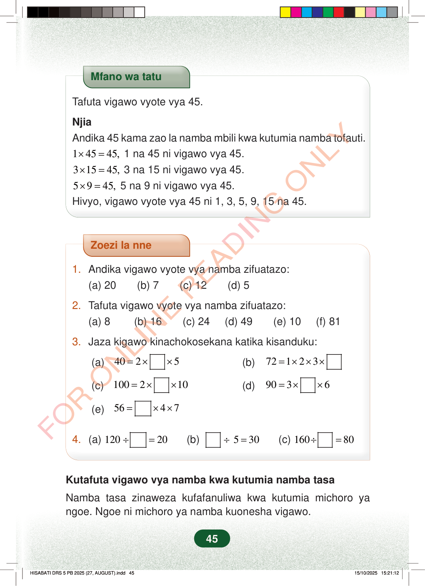

Mfano wa tatuTafuta vigawo vyote vya 45.NjiaAndika 45 kama zao la namba mbili kwa kutumia namba tofauti.14545,×=1 na 45 ni vigawo vya 45.31545,×=3 na 15 ni vigawo vya 45.5945,×=5 na 9 ni vigawo vya 45.Hivyo, vigawo vyote vya 45 ni 1, 3, 5, 9, 15 na 45.Zoezi la nne1.Andika vigawo vyote vya namba zifuatazo:(a) 20 (b) 7 (c) 12 (d) 52.Tafuta vigawo vyote vya namba zifuatazo:(a) 8 (b) 16 (c) 24 (d) 49 (e) 10 (f) 813.Jaza kigawo kinachokosekana katika kisanduku:(a)4025=××(b)72312××=×(c)100210=××(d)9036=××(e)5647=××4.(a)12020÷=(b)530÷=(c)16080÷=Kutafuta vigawo vya namba kwa kutumia namba tasaNamba tasa zinaweza kufafanuliwa kwa kutumia michoro yangoe. Ngoe ni michoro ya namba kuonesha vigawo.45
Mfano wa tatu
Tafuta vigawo vyote vya 45.
Njia Andika 45 kama zao la namba mbili kwa kutumia namba tofauti. 1 45 45, × = 1 na 45 ni vigawo vya 45. 3 15 45, × = 3 na 15 ni vigawo vya 45. 5 9 45, × = 5 na 9 ni vigawo vya 45. Hivyo, vigawo vyote vya 45 ni 1, 3, 5, 9, 15 na 45.
Zoezi la nne
1. Andika vigawo vyote vya namba zifuatazo: (a) 20 (b) 7 (c) 12 (d) 5
2. Tafuta vigawo vyote vya namba zifuatazo: (a) 8 (b) 16 (c) 24 (d) 49 (e) 10 (f) 81
3. Jaza kigawo kinachokosekana katika kisanduku:
(a) 40 2 5 = × × (b) 72 3 1 2 × × = ×
(c) 100 2 10 = × × (d) 90 3 6 = × ×
(e) 56 4 7 = × ×
4. (a) 120 20 ÷ = (b) 5 30 ÷ = (c) 160 80 ÷ =
Kutafuta vigawo vya namba kwa kutumia namba tasa
Namba tasa zinaweza kufafanuliwa kwa kutumia michoro ya ngoe. Ngoe ni michoro ya namba kuonesha vigawo.
45
Mfano wa tatu unaonyesha jinsi ya kutafuta vigawo vya 45. Unaandika 45 kama 1×45, 3×15, na 5×9, hivyo vigawo vya 45 ni 1, 3, 5, 9, 15 na 45.Mfano wa tatuTafuta vigawo vyote vya 45.NjiaAndika 45 kama zao la namba mbili kwa kutumia namba tofauti.1 × 45 = 45, 1 na 45 ni vigawo vya 45.3 × 15 = 45, 3 na 15 ni vigawo vya 45.5 × 9 = 45, 5 na 9 ni vigawo vya 45.Hivyo, vigawo vyote vya 45 ni 1, 3, 5, 9, 15 na 45.Zoezi la nne lina maswali ya vigawo. Mwanafunzi aandike vigawo vya baadhi ya namba, atafute vigawo vya namba nyingine, na ajaze namba zinazokosekana kwenye visanduku.Zoezi la nne1.Andika vigawo vyote vya namba zifuatazo:(a) 20 [[blank:item-1]](b) 7 [[blank:item-2]](c) 12 [[blank:item-3]](d) 5 [[blank:item-4]]2.Tafuta vigawo vyote vya namba zifuatazo:(a) 8 [[blank:item-5]](b) 16 [[blank:item-6]](c) 24 [[blank:item-7]](d) 49 [[blank:item-8]](e) 10 [[blank:item-9]](f) 81 [[blank:item-10]]3.Jaza kigawo kinachokosekana katika kisanduku:(a) 40 = 2 × [[blank:item-11]] × 5(b) 72 = 1 × 2 × 3 × [[blank:item-12]](c) 100 = 2 × [[blank:item-13]] × 10(d) 90 = 3 × [[blank:item-14]] × 6(e) 56 = [[blank:item-15]] × 4 × 74.(a) 120 ÷ [[blank:item-16]] = 20(b) [[blank:item-17]] ÷ 5 = 30(c) 160 ÷ [[blank:item-18]] = 80Kutafuta vigawo vya namba kwa kutumia namba tasaNamba tasa zinaweza kufafanuliwa kwa kutumia michoro ya ngoe.Ngoe ni michoro ya namba kuonesha vigawo.